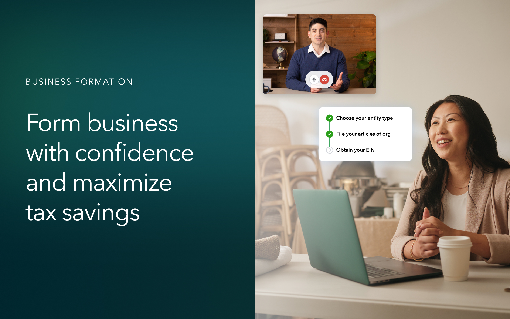
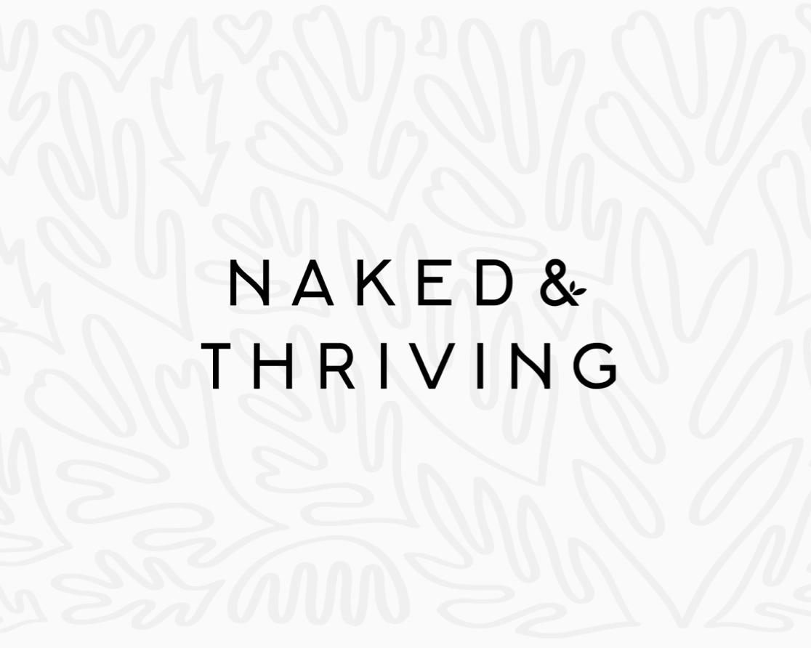

Defining how expert support could become part of the core product experience as QuickBooks evolved into an AI + human platform.
View Case Study →
Intuit · QuickBooks LiveA new expert-led service designed to help SMB customers navigate complex business decisions — and extend QuickBooks support earlier in their journey.
View Case Study →Improving core workflows across a complex fleet platform from driver tasks in the field to dashboard and navigation systems used across daily operations.
View Case Study →
Naked & ThrivingRestructuring a fragmented subscription experience into a clearer self-serve flow for the customer tasks that mattered most.
View Case Study →